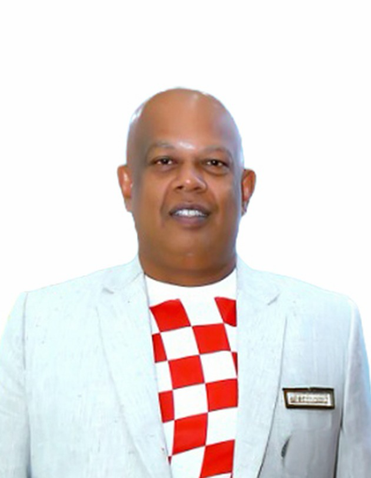

Porkai Pandian Gopalakrishnan
Porkai Pandian Gopalakrishnan is the Founding Owner of Karaikudi Kings and an accomplished entrepreneur with more than two decades of bakery-industry leadership.
Founder & Managing Director
Since May 2004, he has served as Founder and Managing Director of Cake Point Pvt. Ltd., leading strategy, operations, product development and customer relations.
Industry Leadership
He serves as Chairman of the Tamil Nadu Bakers Federation and General Secretary of the India Bakers Federation, representing bakery businesses and supporting industry collaboration and development.
Achievements
His bakery achievements include recognition for creating the longest Christmas decorative cake and the largest photo cake, with honors associated with the Limca Book of Records, Tamil Nadu Book of Records, India Book of Records and Asia Book of Records.
Education & Skills
He holds a Bachelor of Engineering degree in Electrical and Electronics Engineering and brings experience in strategic planning, business development, leadership and stakeholder engagement.